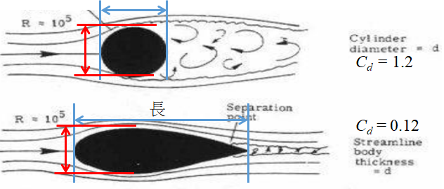
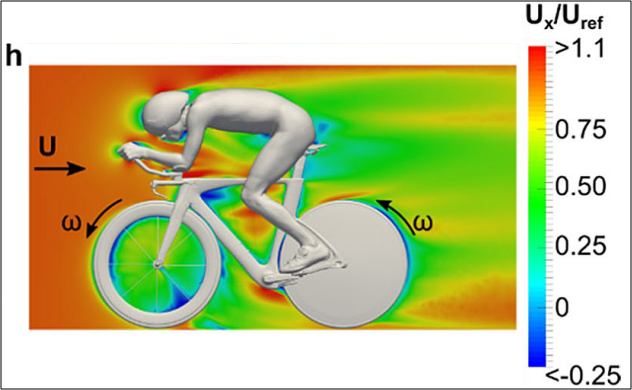
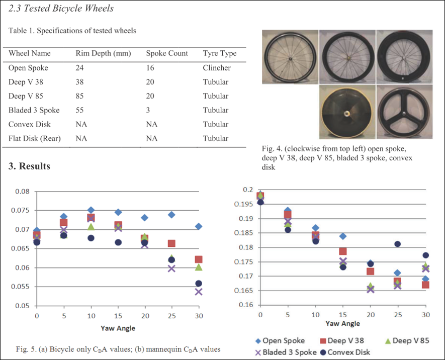
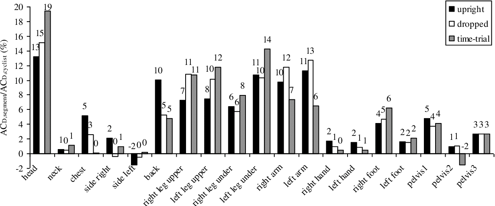

器材與服裝影響騎乘的比例
在騎乘時，當坡度越陡，重量影響的比例就越高，對於人+車總重 79 kg 的車手來說，在爬2 % 的坡時以 300 W 的輸出，那麼重力與空力的影響比大致一樣，超過這坡度時重量影響就更多，若以 200 W，則大概在 1.5% 的坡上大致一樣。而阻力通常占比非常小，大概是10% 左右，但就 200 W 而言也是會要消耗 20 W。所以主要的影響就是重量與空力，這部分可以看頻道另一部影片，裡面有詳細的介紹，可以點右上方的資訊欄去看，以下就分成這兩個來討論。
先來看重量的影響比例，這邊就分成人的重量與其他物品的重量，其他物品就包含車、安全帽、卡鞋、車衣等。
| 人重 | 車重 | 人身部品 | |
|---|---|---|---|
| 重量範圍 (kg) | 45~85 | 6.5~8.5 | 0.8~1.2 |
所以分母就放總重，分子就放人的重量，然後再看一下車手的體重範圍就，可以算出人的重量所佔的比例。當其他物品很輕人很重的情況，人的占比就很大，可到 92.1%，反過來說人很輕，其他重量很重就是人占比最小的情況，但還是有佔大概82%左右，以台灣的情況一般而言人大概是佔88.4% 左右。
| 總重 | 人占比 | |
|---|---|---|
| 人占比最大 | 85 kg 騎 6.5 kg 車 + 0.8 kg 裝備 | 92.1% |
| 人占比最小 | 45 kg 騎 6.5 kg 車 + 1.2 kg 裝備 | 82.3% |
| 一般情況 | 65 kg 騎 7.5 kg 車 + 1.0 kg 裝備 | 88.4% |
那麼再來看風阻的影響比例，這篇論文先固定器材並測風阻，然後同一個人換不同姿勢去測風阻。可以看到在這個器材配置下，器材的風阻面積約為0.8，而人在不同姿勢下的風阻面積，分別為 0.193、0.167、0.134，佔比分別為72%、68%、64%，若是換成一般安全帽與低框輪，則器材的風阻面積會增加，估計佔比會達40%~45%左右。所以可以知道，不論是重量與風阻，人都是佔了大部分的主因。而這兩個情況中，人在重量上又佔了更高的比例。所以之後會針對器材風阻來討論。
| 人+車(m2) | 車(m2) | 人/(人+車)(%) | |
|---|---|---|---|
| 上把位 | 0.270 | 0.193 | 72 |
| 下把位 | 0.243 | 0.164 | 68 |
| 計時姿勢 | 0.211 | 0.134 | 64 |
我們先來看車架所佔的風阻，一般在三大環賽中會看到，爬坡車、空力車與計時車三種車，這邊不另外討論三鐵車。也不討論車架幾何，而是來看一下車架管型的設計。這邊將 cervelo 三種車型，分別是 R5、S5、P5 車架做比較
 |
|---|
| 圖一 https://www.klight.com.tw/product/ |
可以看到 R5 的車架管型，從側面看相對於其他兩台特別細，這是因為強調空力的物體，迎風面看起來會扁扁的，而側面則會看起來很長，因為要讓空氣順順的流過去，這也是一般空力車看起來特別壯的原因處。所以若去測量管型的邊長，然後拿短邊除長邊，爬坡車會越接近1，空力車則會越接近0，越接近0的我就稱為越長，所以一般空力車在下管與坐管，從側面來看就會特別長，
|  |
|---|
| 圖二 https://www.irjet.net/archives/V5/i3/IRJET-V5I3502.pdf |
然後在中間三角形的部分，對於相同尺寸的車而言，越強調空力中間空區就會越小。至於爬坡車、空力車的差異有多少，可以去GOOGLE這篇文章，裡面有同一品牌的爬坡車與空力車風阻面積差異比較，至於空力車與計時車的風阻差多少，也可以去網路上找各車的白皮書參考，裡面也有很多實驗資料可看，這邊就不另外貼上來了。
而輪組也是一樣，所以通常板高越高的輪組風阻也越小，且前輪的影響會大於後輪。可以看到圖五是在模擬騎乘時的風速，可以看到當風到達後輪時，因為會被前輪擋到，所以風速都沒有前輪高。但是因為前輪需要控制方向，所以一般公路計時賽前輪很少用碟輪，而是選用三刀輪或是其他高框輪。當然輪子越種慣性也就越大，但是輪組的慣性影響遠小於風阻。
|  |
|---|
| 圖三 [2] |
|  |
|---|
| 圖四 [3] |
由前面論文可知，人體風阻還是佔了大半部分，所以若是能降低人體風阻，那差異就會很明顯。所以非計時車可以加裝休息把，來趴低一點降低人體風阻。在此也可以定義 P / W 值，意義為減少相同瓦數(Watt)所要花的錢(Price)，所以這個數值越小越好。就這三樣來看的話，如果有預算考量的車友，但是只有爬坡車又想玩三鐵，那個人最推薦先換休息把，再來是換空力車或計時車，最後才是考慮輪組。所以我自己是考慮空力車跟休息把，然後用大概45高的輪組而已。
另外有一篇論文就對人體各部位受的風阻做模擬，然後在一般，握下把跟計時姿勢下，去看各部位所佔的風阻比例。可以看到當姿勢越趴，頭部的影響越大，而各部位影響比例由大至小依序為，頭>小腿>大腿>手臂等。所以之後會針對這四個部位穿著，也就是安全帽、連身衣、車襪鞋套去討論。注意到圖中左小腿比例高於右小腿，右腳板比例高於左腳板，但因為一般人左右算很對稱，所以雖然論文結果差很多，但是這邊是以左右影響差不多的前提去討論。
|  |
|---|
| 圖五 [4] |
那麼先來看安全帽，安全帽主要保護車手，摔車時免於直接撞擊地面，否則戴安全帽的風阻會比光頭還大。所以既然戴安全帽是必須的，且頭部風阻占比很大，所以降低安全帽的風阻效果就會很顯著。在此先對安全帽做分類，這部影片的分類為，會蓋住耳朵的安全帽為計時帽，供應商有強調空力效果，且不會蓋住耳朵的為空力帽，其餘為一般帽。而這篇論文 [5] 使用人體模型，然後換不同安全帽，去測整體的風阻面積，若是計時帽有附風鏡，則戴上風阻會比較小，大概會比空力帽在小個4%左右，且即便是同一種類的帽子也是有些許差異。而越空力的帽子通風孔就越少，所以對安全帽來說，空力跟散熱是無法兼得的，所以若騎乘時間太久的話，通常會選擇空力帽而非計時帽，且計時帽對姿勢比較要求。另外這篇論文 [6] 用數值模擬的方式，比較這兩頂安全帽，在時速40下的風阻功率差異，有興趣的可以去下載來看。
再來看服飾的部分，通常強調空力的服飾除了更貼身外，在材料的選擇上也會特別挑過，且經過特殊的設計。材料的挑選除了輕薄透氣外，強調空力的服飾還會針對雷諾數做研究，也就是在某個條件下風阻係數會突然降低，這稱為阻力危機，像高爾夫球表面的凹洞就是一種應用，表面的凹洞會讓阻力危機更早發生。
 |
|---|
| 圖六 |
空力衣的研究先看均速是多少，然後挑選在那速度附近發生阻力危機的材料，所以像藍色虛線發生阻力危機的速度比較小，而紫色線雖然發生的速度較高，但是發生時的阻力會降更低，且這速率大概就是環法平路速率，所以此材料就可以當一個候選材料。
 |
|---|
| 圖七 [7] |
另外還會用多片材料拼接的方式降低風阻，有些空力衣在袖子跟身體的設計就不同，袖子會另外加衣些條紋或是凹洞，來讓阻力危機提早發生，如同高爾夫球一樣。所以這篇論文就將衣服分三部分，前臂、上臂跟身體分別用不同的設計去看風阻係數變化，最後發現直條紋的設計風阻係數可以很低，所以有些空力衣在袖子部分就會做這設計，例如 sunweb 之前的車衣就有。而因為這設計的風阻可以降低，所以現在短袖車衣的袖子就越做長來降低風阻。而這種設計在空力襪或空力鞋套上也會看到，通常在小腿的部分也會有類似的設計。
人身部品相較於無毛髮的身體，穿了會增加風阻面積，但像安全帽就可以保護受重傷的風險，所以是一定要帶的，但是透氣跟空力很難兼得，所以需要自行考慮。人身部品通常價錢通常低於器材，且減少瓦數的效益也不輸換器材，所以除了計時帽外都算是建議購買的。
最後如果是要購買裝備來減少風阻的話，建議是 計時把 > 連身衣 > 空力帽 > 空力襪 > 車架 > 輪組
[2] Malizia, F., van Druenen, T. & Blocken, B. Impact of wheel rotation on the aerodynamic drag of a time trial cyclist. Sports Eng 24, 3 (2021). https://doi.org/10.1007/s12283-021-00341-6
[3] Barry, N., Burton, D. M., Crouch, T., Sheridan, J., & Luescher, R. (2012). Effect of crosswinds and wheel selection on the aerodynamic behavior of a cyclist. In P. Drane, & J. Sherwood (Eds.), Procedia Engineering - Conference Proceedings of The Engineering of Sport 9 (Vol. 34, pp. 20 - 25). Elsevier. https://doi.org/10.1016/j.proeng.2012.04.005
[4] Thijs Defraeye, Bert Blocken, Erwin Koninckx, Peter Hespel, Jan Carmeliet, Computational fluid dynamics analysis of drag and convective heat transfer of individual body segments for different cyclist positions, Journal of Biomechanics, Volume 44, Issue 9, 2011, Pages 1695-1701, ISSN 0021-9290, https://doi.org/10.1016/j.jbiomech.2011.03.035.
[5] Novak J, Burton D, Crouch T. Aerodynamic test results of bicycle helmets in different configurations: Towards a responsive design. Proceedings of the Institution of Mechanical Engineers, Part P: Journal of Sports Engineering and Technology. 2019;233(2):268-276. doi:10.1177/1754337118822613
[6] Pedro Forte , Daniel Marinho , Tiago M Barbosa , Jorge E Morais. Estimation of an elite road cyclist resistive forces and performance wearing standard and aero helmets: an analytical procedure and numerical simulations approach 2021
[7] Hong S, Asai T. Aerodynamics of Cycling Skinsuits Focused on the Surface Shape of the Arms. Applied Sciences. 2021; 11(5):2200. https://doi.org/10.3390/app11052200